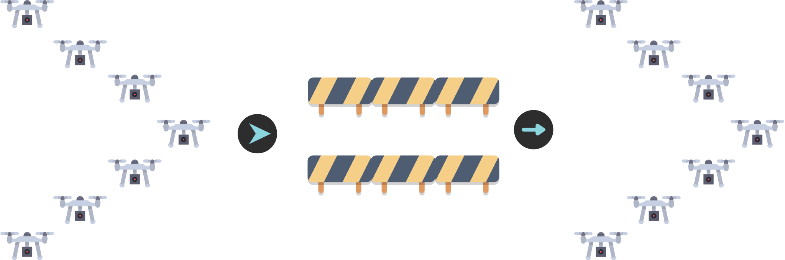

Integration of Control Lyapunov and Control Barrier Functions for Safety-Critical Guarantees in Aggregate Computing
Angela Cortecchia

How will the drones avoid the obstacle?

Current approach

Potential issues:
- eventual consistency;
- loss of formation.
Eventual consistency
How much time will it take to re-form the formation?

Eventual consistency
Potential issues on the transient behavior

Possible consequences of losing the formation

- Lost connection
- New leaders
- Sub-formations going in different directions
How we would like it to behave

Did not lose formation, neither connection, avoided the obstacle safely and keep going towards their goal.
Our goal
Ensure guarantees on the transient behavior of the system, not only on the eventual one.
How to achieve it?
In control theory, there exist formal methods to specify both stability and safety conditions:
- Control Lyapunov Functions (CLF) for fast convergence and stability;
- Control Barrier Functions (CBF) for safety in the transient behavior.
Preliminaries: Control-Affine Systems
A Control-Affine System is a dynamical system described by the equation:
$\dot{x} = f(x) + g(x)u$
where:
- $x \in \mathbb{R}^n$ is the state vector (position, velocity, etc.),
- $u \in \mathcal{U} \subset \mathbb{R}^m$ is the control input (input, actuator commands, etc.),
- $f: \mathbb{R}^n \to \mathbb{R}^n$ is the drift vector field (the natural evolution of the system without control),
- $g: \mathbb{R}^n \to \mathbb{R}^{n \times m}$ is the control input matrix (how the control input affects the system).
Preliminaries: Lie Derivatives
The Lie Derivative of a differential scalar function $h: \mathbb{R}^n \to \mathbb{R}$ along a vector field $f: \mathbb{R}^n \to \mathbb{R}^n$ is defined as:
$L_f h(x) = \frac{\partial h}{\partial x} f(x) = \nabla h(x) \cdot f(x)$
It represents how $h(x)$ changes in time as the state evolves according to the system dynamics.
More on Lie Derivatives
For our Control-Affine System $\dot{x} = f(x) + g(x)u$, the time derivative of $h(x)$ is given by:
$\dot{h}(x, u) = L_f h(x) + L_g h(x) u$
where:
- $L_f h(x)$ is the Lie Derivative of $h$ along $f$ (drift term),
- $L_g h(x)$ is the Lie Derivative of $h$ along $g$ (control term),
- $u$ is the control input.
This notation allows us to express how $h(x)$ evolves over time under the influence of both the system’s natural dynamics and the applied control input.
Control Lyapunov Functions (CLF)
A continuously differentiable function $V: \mathbb{R}^n \to \mathbb{R}_{\geq 0}$ is a Control Lyapunov Function for the target set $\mathcal{X}_d \subseteq \mathbb{R}^n$ if:
- $V(x) = 0$ for all $x \in \mathcal{X}_d$ and $V(x) > 0$ for all $x \notin \mathcal{X}_d$ (positive definiteness);
- For all $x \notin \mathcal{X}_d$, there exists a control input $u \in \mathcal{U}$ such that:
$L_f V(x) + L_g V(x) u < 0$
This condition ensures that the system can be driven towards the equilibrium point $x = 0$.
The existence of a CLF implies that the system is stabilizable.
CLFs are used to design feedback control laws that ensure the system’s stability.
Control Barrier Functions (CBF)
Research question(s)
- How to integrate CLF and CBF in Aggregate Computing?
- How to specify safety-critical requirements both at the single and the collective level?
- How to enforce safety and stability guarantees during the transient behavior of distributed adaptive systems?
How to integrate CLF and CBF in Aggregate Computing?
Aggregate Computing + CLF + CBF use cases
Formal mechanism to guarantee safety properties, e.g.:
- Obstacle avoidance while maintaining formation;
- Collision avoidance between agents;
- Safe navigation in dynamic environments;
- Staying inside a designated area;
- Maintaining sufficient network connectivity;
- Respecting density limits in regions of interest.